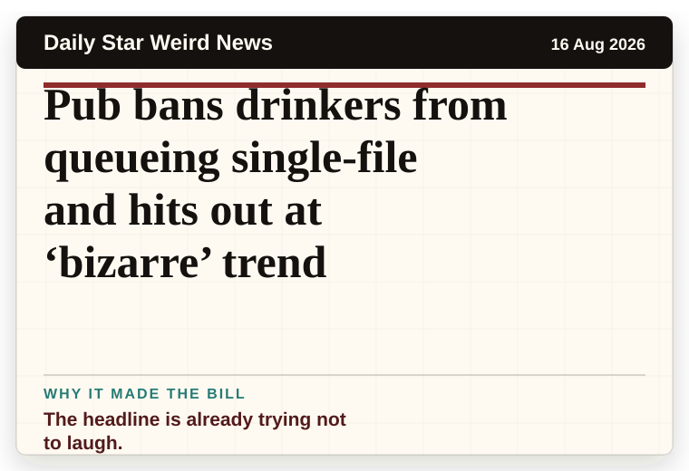
Daily Star Weird News
United Kingdom
Pub bans drinkers from queueing single-file and hits out at ‘bizarre’ trend
The headline is already trying not to laugh.
The latest daily picks, linked back to the original sources. Search the room, pick a source, or follow a headline out to the full story.
Record updated: 16 Aug 2026, 07:39 AM AEST
Showing 11 headline candidates from the refresh run completed on 16 Aug 2026, 07:39 AM AEST.

The headline is already trying not to laugh.
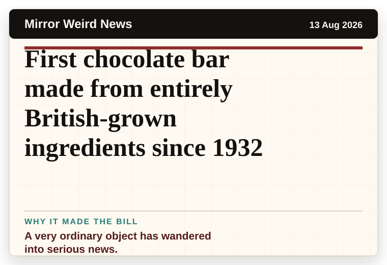
A very ordinary object has wandered into serious news.
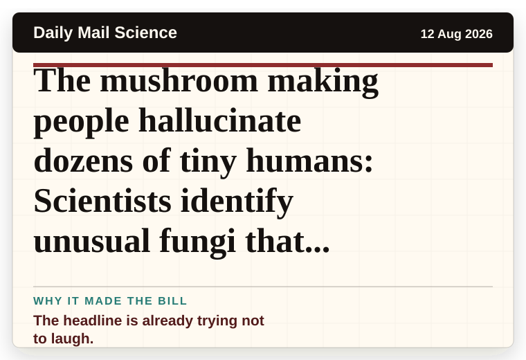
The headline is already trying not to laugh.
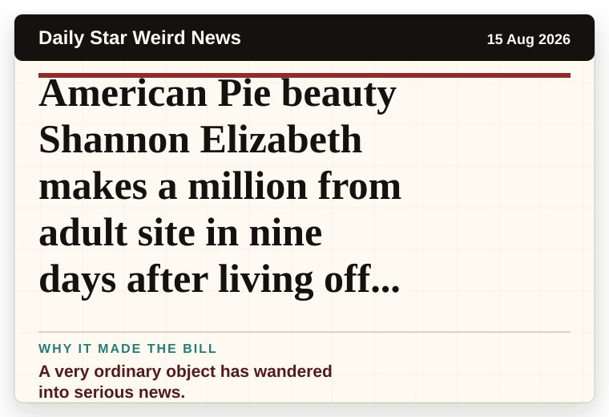
A very ordinary object has wandered into serious news.
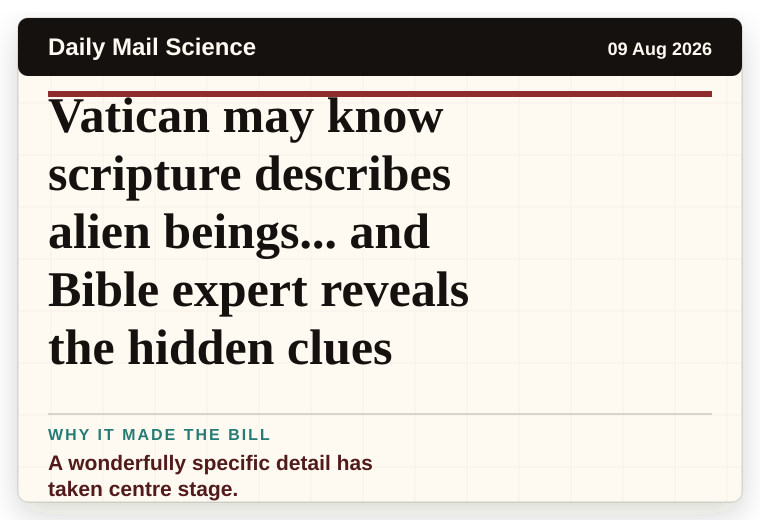
A wonderfully specific detail has taken centre stage.
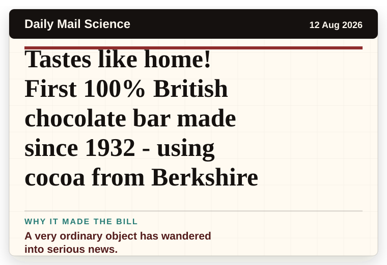
A very ordinary object has wandered into serious news.
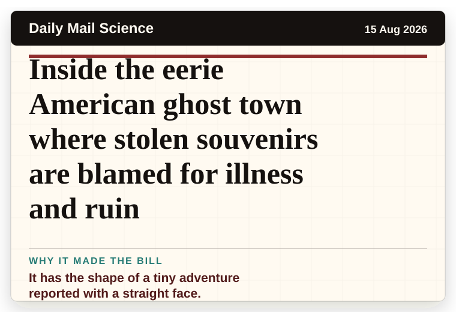
It has the shape of a tiny adventure reported with a straight face.
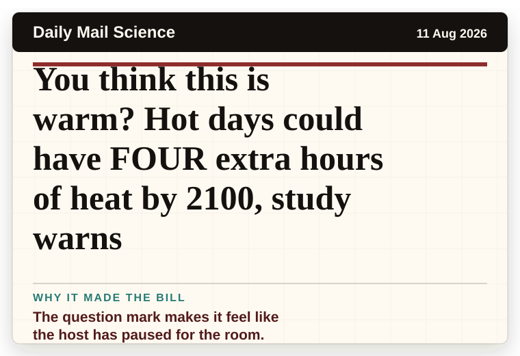
The question mark makes it feel like the host has paused for the room.
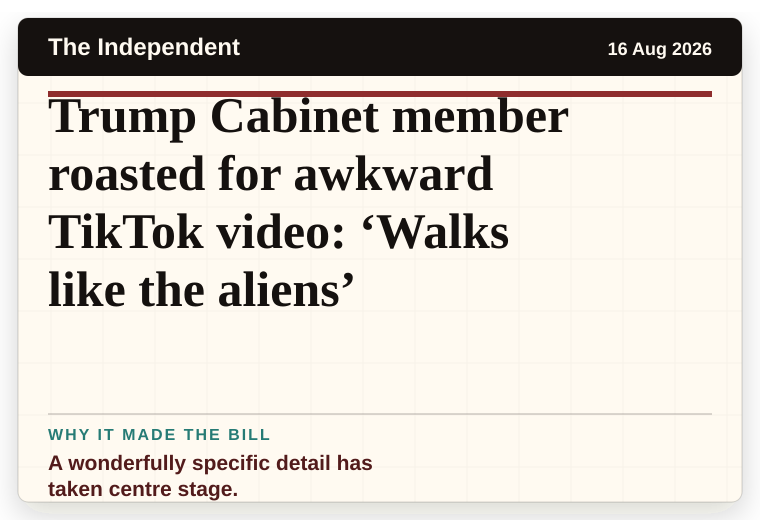
A wonderfully specific detail has taken centre stage.
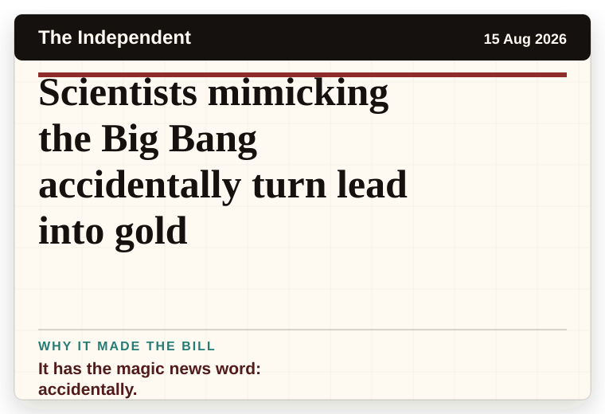
It has the magic news word: accidentally.
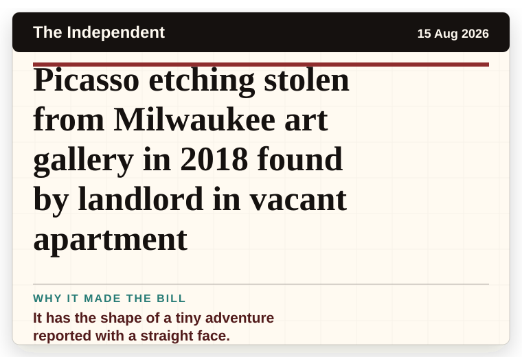
It has the shape of a tiny adventure reported with a straight face.